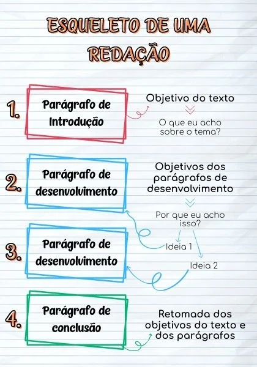
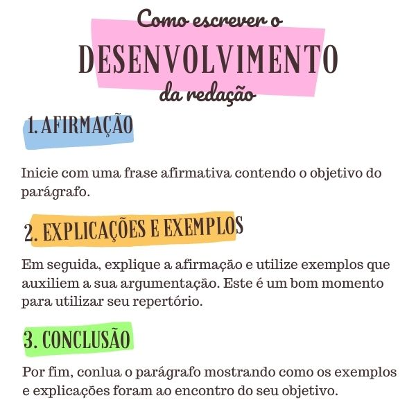
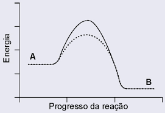

Se você quer saber como estudar para o Enem 2026 do zero, o primeiro passo é montar uma base sólida e seguir um plano bem estruturado. Abaixo, listamos dicas essenciais:
O edital é o guia oficial do exame. Nele, você encontra todas as datas, regras, estrutura da prova, critérios de correção e orientações para os candidatos. É essencial para entender como funciona o Enem e evitar surpresas na hora de fazer o exame.
Você pode optar por estudar sozinho com materiais gratuitos ou pagos, assistir a aulas online, participar de cursinhos presenciais ou utilizar plataformas de estudo como a estuda.com O mais importante é encontrar um método que se adapte à sua rotina e estilo de aprendizagem.
Estabeleça objetivos de curto, médio e longo prazo. Por exemplo: terminar o conteúdo de Biologia em um mês, fazer duas redações por semana, realizar um simulado a cada 15 dias. Isso ajuda a manter o foco e acompanhar a sua evolução.
Tenha à mão apostilas, livros, videoaulas, simulados, questões de provas anteriores e uma plataforma de estudos confiável. Deixe tudo organizado por disciplina para facilitar o acesso no dia a dia.
Priorize os conteúdos que mais caem no Enem, como interpretação de texto, funções, ecologia, análise de gráficos e outros. Esses temas costumam aparecer com frequência e têm grande peso na prova.
Montar um cronograma de estudos é uma etapa fundamental para quem está começando do zero. Ele deve considerar sua rotina, tempo disponível, prioridades e pontos fracos. Aqui vão algumas orientações:
Praticar com simulados e resolver questões anteriores do Enem é uma das melhores formas de se preparar. Esses exercícios ajudam a desenvolver o raciocínio lógico, a interpretação de textos e o controle de tempo durante a prova.
A plataforma estuda.com oferece simulados com correção TRI (a mesma usada pelo Enem), questões de edições anteriores e materiais inéditos criados por especialistas. Além disso, você pode acompanhar seu desempenho por disciplina, identificar pontos fracos e receber recomendações personalizadas de estudo. É uma ferramenta completa que transforma a prática em aprendizado real.
Além dos simulados, também é importante fazer questões diariamente. Separe 30 a 40 minutos do seu cronograma para resolver exercícios variados, sempre revisando os erros para não cometê-los novamente.
A preparação para o dia da prova começa bem antes da data oficial. Veja algumas recomendações importantes:
No primeiro dia, você terá 5h30 para realizar as provas de Linguagens, Ciências Humanas e Redação. No segundo, serão 5h para Matemática e Ciências da Natureza. Por isso, é fundamental treinar a resistência mental com simulados completos.
Também não é permitido entrar na sala de prova usando: óculos escuros e artigos de chapelaria, como boné, chapéu, viseira, gorro ou similares. No caso de artigos religiosos, burca, quipá e outros, os itens deverão ser revistados pelo fiscal de prova.
Você já leu um texto sem introdução e conclusão, apenas com parágrafos de desenvolvimento? Colocando assim pode parecer estranho, mas esse é um erro que muitos candidatos cometem.
Para que você não perca pontos, é importante dominar a estrutura de um texto dissertativo-argumentativo, o modelo de redação cobrado no Enem, no Encceja e em vários vestibulares.
O modelo de estrutura de redação Enem que sugerimos aqui é de 4 parágrafos: um de introdução, dois de desenvolvimento e um de conclusão. Tanto a introdução quanto a conclusão necessitam sempre de apenas um parágrafo. Enquanto isso, o desenvolvimento tem um número variável de parágrafos. Estrutura de uma redação.

Na imagem acima você encontra o esqueleto de uma redação. Em seguida, você vai aprender como planejar e escrever cada um dos elementos do texto.
Não é sem razão que o primeiro parágrafo da estrutura de uma redação é chamado de introdução, pois é nessa parte do texto que você vai expor (apresentar) as principais questões a serem abordadas no restante do texto. No primeiro parágrafo, o leitor terá uma dimensão geral do assunto e vai entender as razões pelas quais a discussão do problema é relevante.
Nessa hora, você deve envolver o leitor e ser criativo o bastante para instigá-lo a continuar a leitura. Uma boa forma de fazer isso é relacionar o tema a aspectos pessoais e/ou sociais. Mostre como essa questão pode afetar a vida do leitor ou como ele está relacionado a ela.
Para que você consiga fazer isso, você pode dividir a sua introdução em 3 partes:
A contextualização ou assunto é algo mais abrangente do que o tema, mas que está conectado a ele. Por exemplo: em 2023, o tema foi “Desafios para o enfrentamento da invisibilidade do trabalho de cuidado realizado pela mulher no Brasil”.
O contexto que envolve essa temática é multifacetado. Pode-se explorar a história das lutas feministas no país, desde a busca por direitos trabalhistas até as demandas por igualdade de gênero. Aqui, obras como “Quarto de Despejo”, de Carolina Maria de Jesus, oferecem um mergulho nas condições de trabalho precárias enfrentadas por mulheres historicamente.
A invisibilidade do trabalho de cuidado realizado pelas mulheres também se entrelaça com questões econômicas e sociais. Dados estatísticos podem ser um suporte valioso para essa discussão, como os números que revelam a disparidade na divisão do trabalho doméstico entre homens e mulheres, ou estatísticas sobre a inserção feminina no mercado de trabalho e os obstáculos enfrentados nesse contexto.
Além disso, é fundamental explorar políticas públicas voltadas para a valorização do trabalho de cuidado, como a licença maternidade, creches e políticas de equidade salarial.
O contexto é, portanto, um bom lugar para você citar algum repertório sociocultural, como um livro, um filme, uma música, um dado histórico ou estatístico.
Depois de fazer a contextualização, você precisa demonstrar como o contexto está ligado ao tema. Tente não copiar o tema de forma literal. Em vez disso, escreva com suas próprias palavras. Mas não esqueça de que todos os elementos do tema precisam estar presentes.
Em seguida, escreva a sua tese, ou seja, aquilo que pretende defender ao longo da redação. Essa é uma das partes mais importantes de todo o seu texto. Para definir qual será a sua tese, você pode se perguntar: “o que eu acho sobre o tema?”. Partindo da sua resposta, você vai conseguir formular o objetivo do seu seu texto, ou seja, sua tese.
Outras perguntas que podem auxiliar na criação da sua tese e, mais à frente, fornecer ideias para os parágrafos de desenvolvimento e para a conclusão:
“Segundo as ideias do sociólogo Habermas, os meios de comunicação são fundamentais para a razão comunicativa. Visto isso, é possível mencionar que a internet é essencial para o desenvolvimento da sociedade. Entretanto, o meio virtual tem sido utilizado, muitas vezes, para a manipulação do comportamento do usuário, pelo controle de dados, podendo induzir o indivíduo a compartilhar determinados assuntos ou a consumir certos produtos. Isso ocorre devido `falha de políticas públicas efetivas que auxiliem o indivíduo a “navegar”, de forma correta, na internet, e à ausência de consciência, da grande parte da população, sobre a importância de saber utilizar adequadamente o meio virtual. Essa realidade constituiu um desafio a ser resolvido não somente pelos poderes públicos, mas também por toda a sociedade”.
O principal cuidado que você deve ter ao escrever a introdução do seu texto é não misturar os assuntos. A pluralidade de ideias deixa o texto poluído e o leitor confuso. E ainda: não mencione nenhum fato na introdução que não será explorado ao longo do texto. Foque na sua tese principal.
É recomendável evitar períodos longos no primeiro parágrafo. O espaço para produzir orações mais longas é o desenvolvimento. E mesmo assim, esse recurso deve ser usado com bastante critério.
Essa parte da estrutura de uma redação pode ser resumida em duas palavras: argumentação e exemplificação. É aqui que as informações mais polêmicas devem aparecer.
Nesse espaço, você também pode dar voz a visões opostas sobre o assunto. Tudo o que foi levantado na introdução deve ser discutido aqui e cada parágrafo pode ser usado para desenvolver uma ideia diferente.
Mas, como conseguir fazer isso na prática? O primeiro passo é relembrar a tese ou objetivo que você criou na introdução. Por exemplo: numa redação sobre agrotóxicos, você pode estabelecer como objetivo mostrar que os agrotóxicos são um retrocesso para a saúde e para a agricultura.
Desmembre esse objetivo em dois: um para o primeiro parágrafo de desenvolvimento e outro para o segundo. No caso do exemplo anterior, você poderia escrever um parágrafo sobre o impacto dos agrotóxicos na saúde e outro na agricultura.
Se você tiver dificuldade para estabelecer os objetivos dos parágrafos, pode olhar para sua tese e se perguntar “por que eu acho isso?”. A partir da resposta, você formula duas ideias diferentes e explica melhor cada uma delas em um parágrafo do desenvolvimento da redação.
Depois de estabelecidos os objetivos dos parágrafos, você vai precisar de 4 elementos para construir cada um dos seus parágrafos de desenvolvimento: afirmação, explicação, exemplificação e conclusão.
Em seguida, você vai explicar a afirmação. Ou seja, vai explicar como os agrotóxicos interferem na saúde.
Também é importante dar exemplos para enriquecer a sua argumentação. É nesse momento que você deve utilizar o seu repertório sociocultural, citando uma atualidade, um livro, um filme, uma fala de alguém, um estudo, uma música, entre outras.
Por fim, é importante concluir o parágrafo e mostrar como a explicação e os exemplos fizeram você encontrar o seu objetivo. No nosso exemplo, a conclusão deveria mostrar como a explicação e os exemplos mostraram que agrotóxicos fazem mal à saúde.

Veja um exemplo de um parágrafo de desenvolvimento. O trecho abaixo é uma continuação da introdução apresentada no item anterior.
“No contexto relativo à manipulação do comportamento do usuário, pode-se citar que no século XX, a Escola de Frankfurt já abordava sobre a “ilusão de liberdade do mundo contemporâneo”, afirmando que as pessoas eram controladas pela “indústria cultural”, disseminada pelos meios de comunicação de massa. Atualmente, é possível traçar um paralelo com essa realidade, visto que milhões de pessoas no mundo são influenciadas e, até mesmo, manipuladas, todos os dias pelo meio virtual, por meio de sistemas de busca ou de redes sociais, sendo direcionadas a produtos específicos, o que aumenta, de maneira significativa, o consumismo exacerbado. Isso é intensificado devido à carência de políticas públicas efetivas que auxiliem o indivíduo a “navegar” corretamente na internet, explicando-lhe sobre o posicionamento do controle de dados e ensinando-lhe sobre como ser um consumidor consciente”.
Como os parágrafos de desenvolvimento são mais longos, se você não estiver atento, corre o risco de repetir informações – o que acarreta na perda de pontos. O mesmo erro pode ocorrer na ânsia de convencer o leitor sobre os seus argumentos
Outro cuidado importante é em relação aos exemplos, que devem ser bastante representativos para situar o leitor e estabelecer a comunicação. Imagine que seus exemplos são uma espécie de pontos luminosos do seu texto. Eles devem ser claros o bastante para dar ainda mais legitimidade aos seus argumentos dentro da estrutura da redação.
Se a palavra-chave do desenvolvimento é argumentação, no último parágrafo o termo que você deve ter em mente é solução. Você levantou uma determinada questão ao longo do texto, certo?
A conclusão é o momento de apresentar as possíveis saídas para o problema por meio da proposta de intervenção e, assim, finalizar a estrutura da redação de forma completa.
O seu parágrafo de conclusão divide-se em três partes: uso de conectivo de conclusão, retomada do objetivo e proposta de intervenção.
Primeiramente, você deve lembrar que o parágrafo de conclusão sempre deve iniciar com um conectivo. Você pode usar “portanto” ou “dessa forma”, por exemplo. Lembrando que o uso de conectivos sempre ajuda a manter a coesão e a coerência do seu texto.
Em seguida, retome os objetivos da sua redação, tanto o que foi estabelecido na introdução quanto aqueles dos seus parágrafos de desenvolvimento.
Por fim, você deve escrever uma proposta de intervenção. Essa é uma parte muito importante, pois só a proposta de intervenção já vale 200 pontos da nota da sua redação.
s corretores da redação não esperam que durante o tempo de prova você encontre uma solução para o problema tematizado. Eles somente esperam que você exponha alguma ação que ajude no enfrentamento do problema. Não precisa ser nada inédito, só precisa ser uma intervenção bem estruturada.
Mas, como fazer uma proposta de intervenção correta e completa? Ela precisa ter 5 elementos:
Portanto, não é suficiente citar uma intervenção de maneira genérica, sem explicar quem seria o responsável ou de que forma seria colocada em prática.
“Portanto, cabe aos Estados, por meio de leis e de investimentos, com um planejamento adequado, estabelecer políticas públicas efetivas que auxiliem a população a “navegar”, de forma correta, na internet, mostrando às pessoas a relevância existente em utilizar o meio virtual racionalmente, a fim de diminuir, de maneira considerável, o consumo exacerbado, que é intensificado pela manipulação do comportamento do usuário pelo controle de dados. Além disso, é de suma importância que as instituições educacionais promovem, por meio de campanhas de conscientização, para pais e alunos, discussões engajadas sobre a imprescindibilidade de saber usar, de maneira cautelosa, a internet, entendendo a relevância de uma “polarização digital” para a concretização da razão comunicativa, com o intuito de utilizar o meio virtual para o desenvolvimento pleno da sociedade”.
Em seguida, confira os cinco elementos presentes na proposta de intervenção do exemplo:
Nas perguntas de Matemática e Ciências da Natureza que aparecem no ENEM, é muito comum a cobrança de gráficos, tabelas e interpretações de dados. Por isso, é importante saber analisar e interpretar essas representações, entendendo as informações que elas apresentam e relacionando-as com o conteúdo estudado.

Para treinar para o ENEM, acesse Prova de Matemática e Ciências da Natureza ENEM 2025 (com gabarito explicado) e resolva questões de Matemática e Ciências da Natureza do ENEM 2025. Assim, você poderá praticar, testar seus conhecimentos e se preparar melhor para a prova
Leiajá